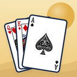

Cartes / 01

Solitaire
Vos classiques de cartes réunis dans une seule collection.
- Sept jeux : Klondike, FreeCell, Pyramid, Spider, TriPeaks, Dame de pique et Spades
- Dame de pique et Spades contre trois adversaires paisibles, avec indices et feuille de score
- Pioche d’une ou de trois cartes, indices et annulation
- Cartes classiques illustrées, six dos de cartes, décors et parties sauvegardées